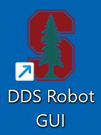
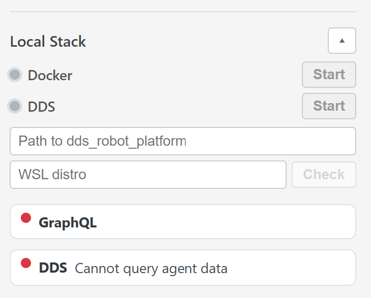
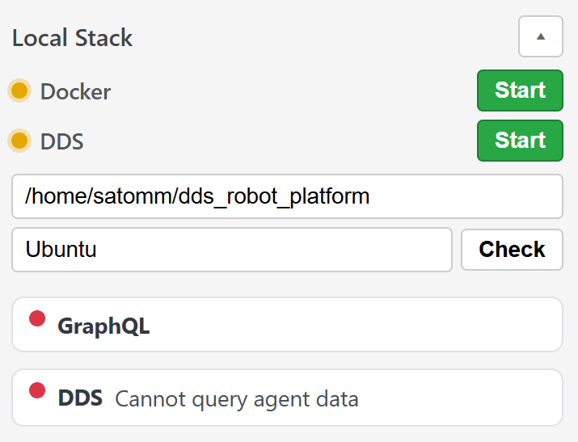

Operation Guide
Power, software, GUI, mapping, and navigation
Getting started
This guide assumes construction and setup are complete. The robot should be powered, on Wi‑Fi, and systems verified before proceeding.
Robot overview
Expand each layer to see components and wiring notes. Click any photo to enlarge.
Motor control PCB, drivetrain, environmental sensor, and motor power switch.

- Main circuit board: Motor control and sensor integration. Three power ports on the front:
- Micro-USB for the 5 V battery. Do not use the side Micro-USB — that port is for serial debugging only.
- Two Tamiya blocks for 7.2 V NiMH motor batteries.
- Drivetrain: 2× DC motors, spider couplers, 6 mm D-shafts, pillow blocks, wheels.
- Environmental sensor: Surroundings detection for reactive behavior.
- Motor switch: Powers motors (14.4 V) and board (5 V). Indicator red when idle, green when ROS activates motors.
Batteries, Jetson, and microphone processing board.

- 5 V USB battery — main board
- 2× 7.2 V NiMH — motors
- 12 V Li-ion — Jetson (connect directly; turn on before use; use split cable when idle)
- Jetson Orin Nano — ROS and processing; wired to main board and mic board
- Microphone board — audio preprocessing
Layers 3 and 4 are spacer layers with no fixed electronic components. They provide vertical clearance between the compute/battery stack (Layer 2) and the sensor tiers above (Layers 5 and 6).
These layers can be used for storage — for example, spare cables, tools, or other small items you want to keep with the robot during transport or operation.

- Orbbec Astra RGB-D — USB to Jetson
- 2× ICS-43434 MEMS mics — MOLEX to microphone board

- RPLIDAR A2M12 — USB to Jetson
- Touchscreen — HDMI (via DP adapter) for video, USB for touch
- USB camera — facial recognition; USB to Jetson
Power on, power off & charging
- Verify all batteries are connected and charged.
- Turn on the 12 V Li-ion battery (Jetson).
- Turn on the motor switch (board + motors; red when idle).
- Wait for Jetson boot (~1–2 min).
- When ROS connects to the MCU, the switch indicator turns green.
sudo shutdown -h now) or through the touchscreen Ubuntu GUI. Unplugging power without a proper shutdown can corrupt the filesystem and damage the system.
- Shut down Jetson via SSH, touchscreen, or:
sudo shutdown -h now
- After shutdown completes, turn off the 12 V battery.
- Turn off the motor switch.
- 5 V USB: Remove and charge via wall adapter or laptop USB.
- 7.2 V NiMH: Tamiya smart chargers; can charge in-place on the robot.
- 12 V Li-ion: Use the provided DC barrel jack charger. The battery does not need to be unplugged from the Jetson — with the split cable, you can charge while the Jetson remains connected and powered on. I recommend charging this way whenever the robot is not actively being used or moving.
Preparing the robots
System startup
Power on the Jetson and microcontroller, then SSH in:
ssh jetson@<robot_ip_address>
Load spidev:
sudo modprobe spidev
spidev to /etc/modules-load.d/spidev.conf to load at boot.Docker containers
With GUI remote start (from downloaded startup script):
sudo docker run --runtime nvidia --network=host -v ~/workspaces/catkin_ws:/workspace/catkin_ws -v ~/gemini_api:/gemini_code -v /dev/bus/usb:/dev/bus/usb -v /dev/video0:/dev/video0 -v /dev/video1:/dev/video1 -it --device=/dev/ttyUSB0 --device=/dev/spidev0.0 --rm --privileged --pid=host --name ros_noetic ml_ros:latest bash -lc 'python3 /workspace/catkin_ws/src/startup_script.py & exec bash'
Without GUI (RVIZ / development):
jetson-containers run -v ~/workspaces/catkin_ws:/workspace/catkin_ws -v ~/gemini_api:/gemini_code -v /dev/bus/usb:/dev/bus/usb -v /dev/video0:/dev/video0 -v /dev/video1:/dev/video1 -i --device=/dev/ttyUSB0 --device=/dev/spidev0.0 --rm --privileged --name ros_noetic $(autotag ml_ros:latest)
Additional terminals:
docker exec -it ros_noetic bash
Optional Gemini container:
sudo docker run -v ~/gemini_api:/gemini_code -v ~/Desktop/audio:/audio -w /gemini_code -it --rm --privileged -p 5000:5000 --name gemini gemini:latest
Accessing code (VS Code)
Use VS Code Remote SSH, then attach to the running Docker container.


Add or select an SSH host (user jetson, default password jetson).

Remote Explorer → Attach to Running Container → select ros_noetic.
Starting User GUI / DDS
Start DDS node
Three terminals (WSL or Unix):
Terminal 1 — Docker:
cd dds_robot_platform docker compose up -d
To shut down the Docker containers:
cd dds_robot_platform docker compose down
Terminal 2 — DDS scripts:
cd dds_robot_platform/dds ./start_scripts.sh
export AGENT_ID=xxx in ~/.bashrc.Terminal 3 — stop scripts:
cd dds_robot_platform/dds ./stop_scripts.sh
Start GUI
Run the installed executable, or with Node.js:
Windows users: Run the following commands from the Windows command line (not WSL).
cd dds_robot_platform/gui npm start
Open the GUI app
Open the installed GUI application to start the GUI.

Start Docker and DDS
In the Local Stack panel, enter the path to your dds_robot_platform directory in the path field, and your WSL distro name in the WSL field (WSL only). Click Verify for the GUI to confirm it can reach the path.

Once verified, the Start options become available:

Before starting Docker from the GUI: Make sure Docker Desktop is running on your machine.
Start Docker first by pressing its Start button, then start DDS by pressing its Start button.
Using the GUI

Select robot
Click a robot in the status panel to select it.
Local software
Start, stop, and monitor DDS/Docker on your machine.
Click mode
Set Robot Goal — navigation target. Set Initial Position — localization seed.
Start robot
Save robot IP, select from dropdown, click Start (or launch via SSH).
Stop / shutdown
Stop — halt motion. Shutdown — kill ROS nodes.
Typical workflow
1. Connect
Robots on the network appear in the status panel. Start via GUI or SSH launch file.
2. Set initial pose
Select robot → Set Initial Position → adjust orientation slider → click map at robot location.
3. Send goal
Switch to Set Robot Goal → click destination on map.
4. Shutdown
Select robot → Shutdown when finished.
Operating the robots
minimal.launch— MCU connection onlyshort.launch— full stack (short robot)tall.launch— full stack (tall robot)sense_and_map.launch— SLAM mapping
Arguments: car:=true (rear-wheel config), patrol:=true (patrol path).
roslaunch mattbot_bringup <launch_file> [arguments:=arg_value]
roslaunch mattbot_bringup sense_and_map.launch
Second terminal — teleop:
roslaunch mattbot_teleop keyboard.launch
Drive through the entire space, then save:
rosrun map_server map_saver -f <map_name> map:=/map
Copy <map_name>.yaml, <map_name>.pgm, and edited <map_name>_mod.pgm to ~/workspace/catkin_ws/src/mattbot_mcl/maps.
python3 ./generate_dds_map.py --map_file <map_name>
Copy current_map.json to your GUI machine as dds_robot_platform/dds/user_map.json.
roslaunch mattbot_bringup tall.launch
Car configuration:
roslaunch mattbot_bringup tall.launch car:=true
Prefer the GUI Power Off button for graceful shutdown.
Manual: Ctrl+C in ROS terminals, or:
rosnode kill -a
Exit container: exit. Shut down Jetson:
sudo shutdown -h now